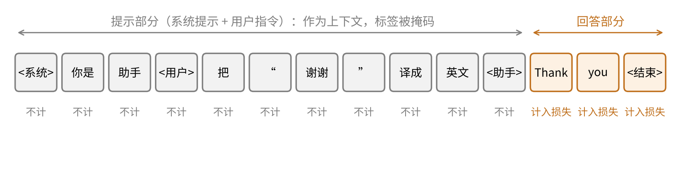

3.5 大语言模型微调与领域适配
预训练得到的基础模型就像一个”读遍了图书馆却从未上过课”的学生：它知识渊博，却不一定懂得如何回答问题、遵守格式、完成任务。本节讨论如何在基础模型之上继续训练，使它的通用能力适配到具体的任务和领域。
3.5.1 使用大模型的两个层面
让一个大模型完成特定任务，通常有两个层面的手段。
第一个层面是提示词工程（Prompt Engineering）。提示词（Prompt）是人类发给模型、用以完成特定任务的指令；提示词工程则是为了让模型更好地完成任务，对提示词进行设计、优化和调整的过程。例如，在提示词中写明角色（“你是一名资深律师”）、给出几个示例（少样本提示，Few-shot Prompting）、要求”一步一步地思考”（思维链提示，Chain-of-Thought），都能显著改善模型的输出。提示词工程不改变模型参数，成本低、见效快，是使用大模型的首选手段。
第二个层面是微调（Fine-Tuning）。大语言模型并不能开箱即用地适应每一项独特的任务。微调是指把预训练模型在特定任务或感兴趣的领域上进一步训练的过程，使模型广泛的语言理解能力适应更具体的任务，或更好地反映特定领域的细微差别。
提示词工程虽然方便，但也有明显的局限：
- 成本与长度限制：复杂任务需要很长的提示词和大量示例，每次调用都要重复处理，推理成本高；提示词过长还可能超出上下文窗口而被截断，导致输出质量下降；
- 无法利用自有数据：提示词只能临时提供少量信息，无法让模型系统地学习企业或领域的大量私有数据；
- 难以实现个性化：特定的语气、风格、输出格式很难仅靠提示词稳定地保持；
- 数据安全问题：每次调用都要把敏感信息写进提示词发给模型服务方，存在泄露风险。
在提示词工程和微调之间，还有一种常用的折中方案：检索增强生成（Retrieval-Augmented Generation，RAG），即先从外部知识库中检索与问题相关的文档，再把它们和问题一起交给模型生成回答。三种方案的比较如表 3-10 所示。
表3-10 提示词工程、检索增强生成与微调的比较
| 比较维度 | 提示词工程 | 检索增强生成（RAG） | 微调 |
|---|---|---|---|
| 是否修改模型参数 | 否 | 否 | 是 |
| 适合解决的问题 | 引导模型完成通用任务 | 补充最新的、私有的事实性知识 | 改变模型的行为、风格、格式，注入领域能力 |
| 知识更新 | 每次在提示词中提供 | 更新知识库即可，实时性好 | 需要重新训练 |
| 实施成本 | 最低 | 中等（需搭建检索系统） | 较高（需数据、算力和训练经验） |
| 典型例子 | 写邮件、做摘要 | 企业知识库问答 | 医疗问诊模型、特定格式的信息抽取 |
实践中的一般原则是：能用提示词解决的，先用提示词；缺的是知识，优先考虑 RAG；要改变的是模型的行为和能力，再考虑微调。 三者也常常组合使用。
3.5.2 微调的分类
微调技术可以从两个角度分类。
从更新参数的规模看，分为两类：
- 全量微调（Full Fine-Tuning，FFT）：更新模型的全部参数。效果通常最好，但显存和算力开销与预训练同一量级，且每个任务都要保存一份完整模型；
- 参数高效微调（Parameter-Efficient Fine-Tuning，PEFT）：冻结绝大部分预训练参数，只训练少量新增或选定的参数，以很小的代价达到接近全量微调的效果（见 3.6 节）。
从训练数据来源和训练方法看，分为三类：
- 指令微调（Instruction Tuning），也称监督微调（SFT）：用”指令—回答”形式的标注数据，以监督学习的方式训练模型（本节重点）；
- 基于人类反馈的强化学习（RLHF）：用人类对模型回答的偏好判断训练奖励模型，再通过强化学习优化模型（见 3.7 节）；
- 基于 AI 反馈的强化学习（RLAIF）：用 AI 模型代替人类提供偏好反馈（见 3.7 节）。
这两个角度是正交的：例如，可以用 LoRA（一种 PEFT 方法）来做指令微调，也可以用全量微调来做 RLHF。
3.5.3 指令微调
1．为什么需要指令微调
经过海量数据预训练的语言模型虽然具备了大量”知识”，但由于其训练目标仅仅是预测下一个词，它还不能理解并遵循人类以自然语言形式给出的指令。例如，对基础模型输入：
请严格按照 JSON 格式返回上海的人口和面积。
基础模型可能续写出”请严格按照 JSON 格式返回北京的人口和面积。“，因为在它见过的网页中，这类文本常常以列表形式出现。为了让模型理解并响应人类指令，需要用指令数据对它进行微调。
指令微调是指在有限的数据条件下，构造或筛选出最有价值的”指令—回答”样本，通过监督学习帮助模型获取遵循指令和完成下游任务的能力，从而实现与大规模任务专用训练相当甚至更好的效果。指令微调阶段关注的核心问题包括：指令数据如何构造，如何高效、低成本地进行训练，以及如何在语言模型基础上进一步扩展上下文长度等。
2．指令数据的格式
指令数据集中的每个实例由三个元素组成：
- 指令（Instruction）：说明任务的自然语言文本；
- 输入（Input，可选）：为任务提供补充信息的上下文；
- 输出（Output）：基于指令和输入的期望回答。
例如：
指令：判断下面这条电影评论的情感倾向，回答“正面”或“负面”。
输入：这部电影剧情很好，但是结局有些仓促。
输出：正面在实际训练对话模型时，这些字段会按照对话模板（Chat Template）拼接成一个完整的序列，用特殊标记区分系统提示、用户和助手的发言。例如，Qwen 系列使用的 ChatML 格式形如：
<|im_start|>system
你是一个乐于助人的助手。<|im_end|>
<|im_start|>user
判断这条评论的情感倾向：这部电影剧情很好，但是结局有些仓促。<|im_end|>
<|im_start|>assistant
正面<|im_end|>不同模型的对话模板各不相同，推理时使用的模板必须与微调时一致，否则模型的表现会明显下降。
3．指令微调的训练目标
指令微调使用的仍然是式（3-2）那样的”预测下一个 Token”交叉熵损失，但有一个关键区别：只在回答部分计算损失。设拼接后的序列中，提示部分为 \(\mathbf{x}\)，回答部分为 \(\mathbf{y} = \left( y_{1},\ldots,y_{m} \right)\)，则
\(\mathcal{L}_{SFT}(\theta) = - \frac{1}{m}\sum_{t = 1}^{m}\log P_{\theta}\left( y_{t} \mid \mathbf{x},\, y_{< t} \right)\quad\) (3-25)
如图 3-11 所示，提示部分的 Token 作为上下文参与前向计算，但它们的标签被掩码，不产生损失。这样做的原因是：我们希望模型学会”如何回答”，而不是学会”如何提问”。

图3-11 指令微调中的损失掩码：只在回答部分计算损失
3.5.4 指令数据集的构建
指令微调的效果在很大程度上取决于数据集的质量。构建指令数据集主要有两种方法。
方法一：由已有的标注数据集转换而来。 自然语言处理领域积累了大量带标注的数据集（如情感分类、问答、翻译）。可以为每类任务编写若干指令模板，把原有的”文本—标签”对转换为”指令—输出”对。Google 的 Flan 系列数据集和 BigScience 的 P3 数据集就是用这种方法构建的。这种方法得到的数据量大、标签可靠，但任务形式相对单一，与真实用户的提问方式有差距。
方法二：用大语言模型生成。 先人工撰写少量种子指令，再让 GPT-4 等强大模型模仿种子指令扩展出大量新指令，并为每条指令生成回答，最后进行过滤和去重。Self-Instruct 方法从 175 条人工种子任务出发生成了约 5.2 万条指令数据；斯坦福的 Alpaca 用同样的思路以很低的成本构建了 5.2 万条数据，并微调出了效果不错的 LLaMA 模型。InstructWild 等数据集也采用了类似的方法。这种方法成本低、多样性好，但数据质量受限于”教师”模型，可能继承它的错误；使用时还要注意”教师”模型的服务条款。
此外，还可以收集真实用户与模型的对话（在用户授权的前提下），或聘请领域专家撰写高质量的问答，这类数据质量最高但成本也最高。
关于指令数据，研究者得出了一个重要的经验：质量比数量更重要。 2023 年的 LIMA 研究仅用 1000 条精心挑选的高质量样本微调一个 650 亿参数的 LLaMA 模型，就得到了与使用大规模数据微调的模型相当的对话能力。研究者据此提出”表面对齐假说”：模型的知识和能力几乎都是在预训练中获得的，指令微调主要教会模型”以什么格式和风格与用户交互”。
除纯文本的指令数据外，多模态指令数据也日益重要。例如，LLaVA 使用由图像及其相关问答构成的视觉指令数据，把语言模型与视觉编码器连接起来，使模型能够”看图回答问题”。
3.5.5 微调的风险与领域适配
微调并非总是有益的，常见的风险包括：
- 灾难性遗忘（Catastrophic Forgetting）：在窄领域数据上训练过度，模型会遗忘预训练中获得的通用能力。缓解的方法包括降低学习率、减少训练轮次、在微调数据中混入一定比例的通用数据，以及使用参数高效微调；
- 过拟合：微调数据量通常较小，训练过久会使模型死记训练样本，泛化能力下降；
- 安全性退化：研究表明，即使用看似无害的数据微调，也可能削弱模型原有的安全对齐效果，因此微调后需要重新进行安全评估。
当目标领域与预训练数据差异很大（如特定语种、医学、法律）时，仅靠指令微调往往不够，因为模型缺的不是”回答的格式”，而是”领域的知识”。这时可以先进行继续预训练（Continued Pre-training，也称增量预训练）：用大量无标注的领域文本，以预训练的方式继续训练基础模型，让它补充领域知识；然后再进行指令微调和对齐。完整的领域适配流程可以概括为：
通用基础模型 → 领域继续预训练（补知识） → 领域指令微调（学格式） → 偏好对齐（调行为）